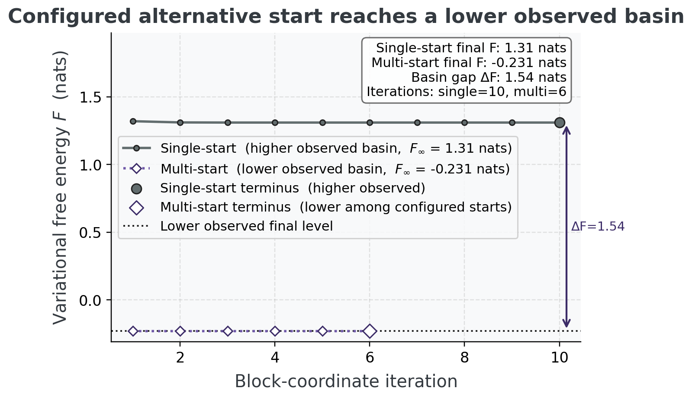

Supplement: variational aggregation objective and weight control
This supplement gives the full derivation behind Section 5.8.2:
the server-side aggregator robust_aggregate is a heuristic,
and a single change of divergence direction turns it into
block-coordinate descent on a stated free energy with a derived,
redescending effective-weight update. We work throughout with
categorical local posteriors \(q_n(s)\)
over the shared latent factor, base weights \(w_n > 0\), robustness \(c > 0\), and the consensus \(q\) on the probability simplex. Let \(\lambda>0\) be the entropy-weight
coefficient, with the current default at \(\lambda=1.0\).
Why the sharp heuristic is not yet variational
The sharp server rule is empirically strong, but this repository has not established a variational certificate for it. The heuristic of Eq. (6) alternates a reverse-KL weight update \(a_n \leftarrow w_n\exp(-c\,\mathrm{KL}(q_n \,\|\, q))\) with the log-linear consensus \(q \leftarrow \mathrm{softmax}(\sum_n a_n \log q_n)\). For the natural direct objective \(\sum_n a_n \mathrm{KL}(q_n \,\|\, q) + \tfrac{1}{c}\mathrm{KL_{gen}}(a\,\|\,w)\), the reverse-KL rule is the \(a\)-minimizer, but the \(q\)-minimizer is the arithmetic (linear) pool \(q \propto \sum_n a_n q_n\), not the log-linear pool. The executable orientation witness confirms this finite-simplex mismatch. The following proposition goes further, while retaining a deliberately narrow scope.
\[ Q(a;s) \;=\; \operatorname{softmax}\!\left(\sum_n a_n\log s_n\right) \] {#eq:raw-log-pool-block}
The proposed raw \(q\)-block is the map in Eq. (19).
\[ F(q,a;s,w) \;=\; \sum_n a_n\,\mathrm{KL}(q\,\|\,s_n) + R(a,w) + G(q). \] {#eq:separable-server-objective}
Proposition 1 (Scoped separable raw-log-pool no-go). For categorical state dimension \(K\geq2\), no objective of the declared displayed form with \(G\) continuously differentiable, \(R\) independent of \(q\) and the \(s_n\), and \(G\) independent of \(a\) and the \(s_n\), has \(Q(a;s)\) as its \(q\)-coordinate minimizer for every interior raw \(a\in\mathbb{R}_{>0}^N\) and every interior local-posterior collection \(s\). Consequently, this objective class cannot realize both block maps of the implemented raw-weight heuristic.
Proof sketch. Fix any non-uniform interior \(q\), a positive scalar \(\alpha\), and one local posterior constructed in Eq. (21):
\[ s_i^{(\alpha)} \;=\; \frac{q_i^{1/\alpha}}{\sum_j q_j^{1/\alpha}}. \] {#eq:raw-log-pool-witness-source}
Then \(Q(\alpha;s^{(\alpha)})=q\). Writing \(\Pi\) for projection onto the tangent space of the simplex, first-order stationarity of Eq. (20) at that same \(q\) requires \(\Pi[(\alpha-1)\log q+\nabla G(q)]=0\). The unit-scale construction forces \(\Pi\nabla G(q)=0\); any different positive scale then forces \(\Pi\log q=0\), contradicting the non-uniform choice of \(q\). The executable witness records both exact log-pool identities and the nonzero tangential contradiction.
A companion witness also blocks the obvious normalized-weight escape within the same natural data-term class: two interior consensuses yield the same normalized reverse-KL weights but different forward-KL data-term differences, so a \(q\)-independent differentiable \(R(a,w)\) cannot satisfy both simplex-stationarity equations. The implementation itself uses raw effective weights, so this companion is a scope check rather than a description of the production update.
| Formal artifact | Executable source | Scope |
|---|---|---|
| Raw-log-pool contradiction | server_theory.py: raw witness |
The declared raw \(q\)-block map over every interior input |
| Normalized-weight companion | server_theory.py: normalized witness |
The normalized reparameterization of the same forward-KL data-term class |
| Typed source report | report formal_no_go field |
Deterministic witness metadata, separate from the empirical attack grid |
Table Table 9 records the deterministic implementation surfaces that bind this scoped result to the typed analysis report.
The proposition does not say that no objective of any kind exists. It does not exclude nonseparable \(q\)–\(a\) couplings, source-dependent terms, non-differentiable constructions, or objectives that encode selected fixed points without reproducing the update blocks for all interior inputs. Thus Section 5.8 retains the heuristic label and claims only the recovery limit, the scoped negative result above, and conditional empirical behavior — never a bounded-influence property or an objective-backed status.
Aggregation free energy and its block minimizers
Definition 2 (Aggregation free energy). For \(c>0\), \(\lambda>0\), consensus \(q\), and effective weights \(a = (a_n)\), \(a_n \ge 0\), define \(F_\lambda(q,a)\) as in (Eq. (7)) with the forward cross-entropy \(\mathrm{CE}(q, q_n) = -\sum_i q_i \log q_{n,i}\), the consensus entropy \(H(q)\), and the generalized KL \(\mathrm{KL_{gen}}(a\,\|\,w) = \sum_n[a_n\log(a_n/w_n)-a_n+w_n]\).
The \(q\)-block. For \(\lambda>0\), fixing \(a\), the \(q\)-dependent part of \(F_\lambda\) is \(\sum_n a_n \mathrm{CE}(q,q_n) - \lambda H(q) = \sum_i q_i\big[\lambda\log q_i - \sum_n a_n \log q_{n,i}\big]\). Adding a Lagrange multiplier for \(\sum_i q_i = 1\) and differentiating gives \(\lambda\log q_i + \lambda - \sum_n a_n \log q_{n,i} + \mu = 0\), i.e.
\[ q_i \;\propto\; \exp\!\Big(\tfrac{1}{\lambda}\textstyle\sum_n a_n \log q_{n,i}\Big) \;=\; \mathrm{softmax}\!\Big(\tfrac{1}{\lambda}\textstyle\sum_n a_n \log q_n\Big)_i, \] {#eq:agg-q-min}
the product of the weighted experts — the consensus update of Eq. (8). At the default \(\lambda=1.0\), the \(-H(q)\) term sharpens the weighted geometric mean into the product-of-experts (the entropy bonus that makes the project’s log-linear pool a product rather than a geometric average).
The \(a\)-block. Fixing \(q\), \(\partial F/\partial a_n = \mathrm{CE}(q,q_n) + \tfrac{1}{c}\log(a_n/w_n) = 0\), so
\[ a_n \;=\; w_n\,\exp\!\big(-c\,\mathrm{CE}(q, q_n)\big), \] {#eq:agg-a-min}
the weight update of Eq. (8). Because \(\mathrm{CE}(q,q_n) = H(q) + \mathrm{KL}(q\,\|\,q_n)\), the forward direction \(\mathrm{KL}(q\,\|\,q_n)\) — not the heuristic’s reverse \(\mathrm{KL}(q_n\,\|\,q)\) — is the one consistent with the consensus update.
Each block update is the exact minimizer of its block, so alternating them is block-coordinate descent: \(F\) is non-increasing at every half-step. When the iterates converge, their fixed point is coordinatewise stationary.
The implementation keeps numerical failure handling outside that theorem. If finite-precision underflow collapses all effective weights, it records a fallback event, substitutes the declared base weights to return a valid probability vector, and does not certify the substituted trajectory as converged. Such a trace is diagnostic evidence about the solver boundary, not an instance of the exact block-descent result.
Formal properties of the conservative server rule
Theorem 3 (Variational aggregation: descent, recovery, and effective-weight bound). Let \(c>0\) and \(\lambda>0\). Each alternating update in (Eq. (22))–(Eq. (23)) never increases \(F\). Any converged fixed point is coordinatewise stationary. As \(c\to 0\) the generalized-KL penalty forces \(a_n \to w_n\) and the consensus is the tempered log-linear pool; at the default \(\lambda=1.0\) it is the log-linear pool (Eq. (5)) exactly, so the variational aggregator shares the project log-linear-pool corner of (Eq. (6)). Under the qualified bridge of Section 5.8, this is only the categorical message-combination specialization, not the complete source protocol. Finally, the effective weights satisfy \(a_n = w_n\exp(-c\,\mathrm{CE}(q,q_n)) \le w_n\) with \(a_n \to 0\) as \(\mathrm{KL}(q\,\|\,q_n)\to\infty\). Thus the raw effective-weight update is bounded and redescending relative to the realized consensus. This statement does not by itself establish a bounded influence function or finite gross-error sensitivity for the normalized consensus estimator.
The objective \(F\) is biconvex (each block convex, the coupling \(\sum_n a_n\mathrm{CE}(q,q_n)\) bilinear), so the result concerns monotone block updates and converged coordinatewise fixed points, not guaranteed convergence to or certification of a global minimum.
The effective-weight regime, and why multi-start
matters. The weight bound \(a_n \le
w_n\) is unconditional (\(\mathrm{CE}(q,q_n)\ge 0\) always). The
collapse \(a_n \to 0\) is
driven by the agent’s divergence from the realized consensus
\(\mathrm{KL}(q\,\|\,q_n)\), and the
consensus itself depends on the weights. Because \(F\) is biconvex, this couples into a
subtlety an adversarial review of this work surfaced: a
near-one-hot saboteur (contamination rate \(\to 1\)) already captures the
product-of-experts, so a descent seeded at that pool stays in a
consensus-capture basin (high \(F\))
where the saboteur keeps its weight — even against an honest majority.
The repair is to search the stated objective more carefully:
variational_aggregate runs multi-start
block-coordinate descent (the pool, the uniform belief, and the
arithmetic-mean seeds) and returns the lowest-observed-\(F\) converged candidate. In the configured
colony, the uniform/arithmetic seeds reach a lower-\(F\) vetoing basin, so the saboteur
is suppressed even at the simplex vertex (pinned qualitatively by the
near-vertex multi-start test) — the 267.1\(\times\) suppression of Figure 15 is
measured across the swept contamination grid, whose most extreme point
sits just below rate \(1\). What
remains fundamental to every robust fusion rule, and is not
claimed away: with no honest majority — a colony split with no anchoring
plurality — there is no truth to recover. The observed suppression is
conditional on the tested colonies and the fixed point selected by a
finite multi-start heuristic.
Figure 17 makes the capture and the escape concrete on a near-vertex colony: the single (log-linear-pool) start settles at \(F = 1.3092\) (the capture basin, where the saboteur keeps its weight), while the multi-start descent reaches the genuinely lower \(F = -0.2305\) vetoing basin — a gap of 1.5397 nats that is exactly the difference between trusting the natural seed and solving the stated objective properly.

Numerical witnesses for descent and influence bounds
The analysis pipeline runs variational_aggregate at
robustness \(c = 1.50\) on a
contaminated colony and records the free energy after each iteration.
The descent falls from \(F = 3.2458\)
to \(F = 2.3780\) (a monotone drop of
\(0.8678\) over 11 iterations,
converged: Yes); the largest single-step increase is \(8.88 \times 10^{-16}\), machine zero — the
monotonicity of the theorem, witnessed numerically and drawn in Figure 14.
For the effective-weight diagnostic, one agent is drifted from healthy toward a confident-wrong delta and its normalized influence is read at each drift. Clean, it carries \(0.143\) of the pool; at the most extreme swept drift it carries below \(0.001\) — a factor of 267.1 (computed from the unrounded influences, not the display-rounded values above) below the fixed 0.143 the naive pool would still grant it (Figure 15). This makes the redescending normalized-weight behavior visible on the tested path; it is not an estimator-level B-robustness proof.
Tempered aggregation family for the accuracy-guarantee trade
The aggregator of Section 11.2 fixes the entropy term at unit weight. Relaxing that single coefficient generates a one-parameter tempered family. Introduce an entropy weight \(\lambda > 0\) — the inverse temperature is \(1/\lambda\) — and minimize
\[ F_\lambda(q, a) \;=\; \sum_n a_n\,\mathrm{CE}(q, q_n) \;-\; \lambda\,H(q) \;+\; \tfrac{1}{c}\,\mathrm{KL_{gen}}(a \,\|\, w). \] {#eq:tempered-family}
Repeating the \(q\)-block derivation of Eq. (22) with the entropy scaled by \(\lambda\) leaves the \(a\)-block untouched and tempers only the consensus update:
\[ q \;\propto\; \exp\!\Big(\tfrac{1}{\lambda}\textstyle\sum_n a_n \log q_n\Big), \qquad a_n \;=\; w_n\,\exp\!\big(-c\,\mathrm{CE}(q, q_n)\big). \] {#eq:tempered-updates}
The \(\lambda\downarrow0\) endpoint is separately implemented as a deterministic tied-argmax rule; it is not obtained by substituting \(\lambda=0\) into Eq. (24) or Eq. (25).
The weight update is independent of \(\lambda\): the bound \(a_n \le w_n\) with collapse \(a_n \to 0\) as \(\mathrm{KL}(q\,\|\,q_n) \to \infty\) is unchanged, so the raw effective-weight bound of Section 11.3 holds for every \(\lambda > 0\). At \(\lambda = 1.0\) the temperature is unity and Eq. (25) is identical to the current axis-3 aggregator Eq. (8) — the default is bit-identical, not merely close. The \(c \to 0\) recovery of Section 11.3 generalizes to the tempered log-linear pool \(q \propto \exp(\tfrac{1}{\lambda}\sum_n w_n \log q_n)\); at \(\lambda = 1.0\) this is exactly \(\mathrm{softmax}(\sum_n w_n \log q_n)\) — the project’s log-linear pool Eq. (5). Under the shared-support, posterior-log-potential, and fixed-weight assumptions of Section 5.8, that pool is a categorical specialization of Friston Eq. 7’s message-combination term, not a reconstruction of the complete source protocol. Positive-temperature members away from that default are tempered pools, not Friston Eq. 7 itself; the project recovery checks, including ISC-10, remain project-local.
A small empirical sweep over \(\lambda \in \{ 0.1, 0.2, 0.3, 0.5, 0.7, 1 \}\) on 10 contaminated colonies (5 agents, 2 adversarial) asks whether a single \(\lambda^{\ast}\) makes the conservative aggregator narrow the gap to the sharp \(\mathrm{robust\_aggregate}\) point-accuracy. The closest observed weight is \(\lambda^{\ast} = 0.3\) with an accuracy gap of 0.0008. A lambda* narrows the tested accuracy gap while preserving the stated weight bound on this grid. If no \(\lambda\) closes that gap while preserving the derived weight update, the result is the conservatism trade-off of Section 8.13, not a defect to hide.